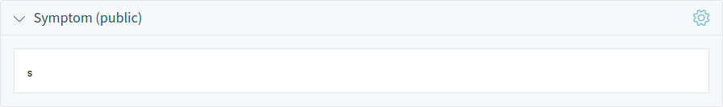
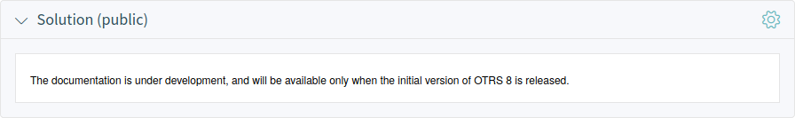
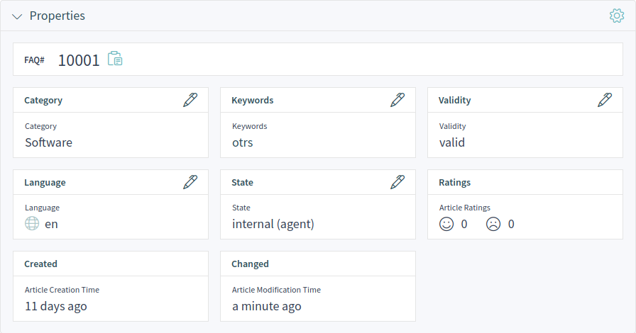
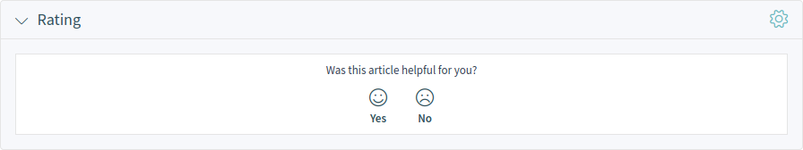
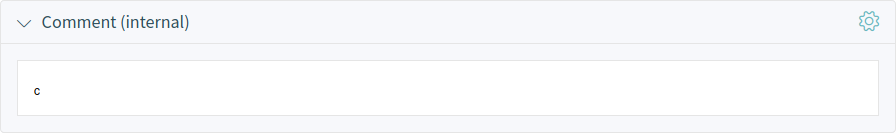
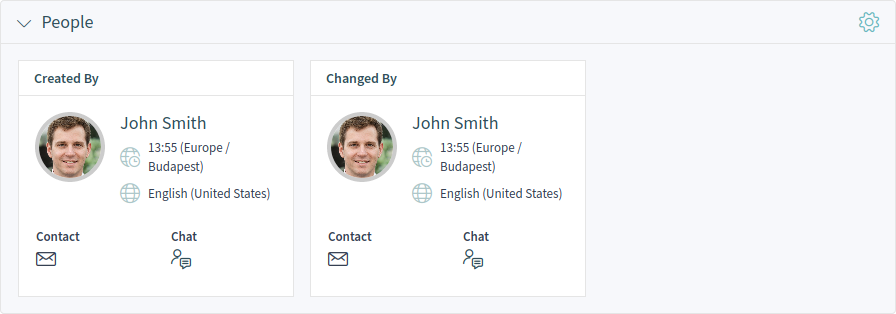

Knowledge Base Articles¶
Knowledge base articles contain answers for frequently asked questions, or they contain common knowledge.
Creating knowledge base articles should be done based on customer tickets. A good knowledge base contains all relevant information, that occurs during ticket handling. Knowledge base articles can be easily attached to new tickets in any ticket or article creation screens. This can help agents to shorter the time when answering a ticket.
Create Knowledge Base Article¶
Use this screen to add new knowledge base articles to the system. The knowledge base article create screen is available from the main menu and from the action menu.
Create Knowledge Base Article
The following settings are available when adding this resource. The fields marked with an asterisk are mandatory.
- Properties
In this section the following options can be set.
- Title *
- The name of this resource. Any type of characters can be entered to this field including uppercase letters and spaces. The name will be displayed in the overview table.
- Keywords
- Add some keywords to make it easily to find the knowledge base article.
- Category *
- Select a category from the available categories.
- State *
Select the state of the knowledge base article. Possible options are:
- External (customer): The knowledge base article is visible for agents and logged in customer users on the external interface.
- Internal (agent): The knowledge base article is visible for agents only.
- Public (all): The knowledge base article is visible at the public interface.
- Validity *
- Set the validity of this resource. Each resource can be used in OTRS only, if this field is set to valid. Setting this field to invalid or invalid-temporarily will disable the use of the resource.
- Language *
- Select a language from the available languages.
- Attachments
- It is possible to add attachments to the knowledge base article. Click on the field to add an attachment, or just drop some files here.
- Symptom (public)
- Add a description here, that explains the current situation.
- Problem (public)
- More detailed description about the problem.
- Solution (public)
- How to solve the problem, or what is a workaround to solve it.
- Comment (internal)
- Internal text about the current knowledge base article for agents only.
Knowledge Base Article List¶
Use this screen to browse through the knowledge base articles. The knowledge base article list is available from the organizer sidebar.
Knowledge Base Article List
The items of the list can be exported. Clicking an item in the list opens the detail view of the knowledge base article.
Knowledge Base Article Detail View¶
Use this screen to see the details of a knowledge base article. The knowledge base article detail view is available, if you select an knowledge base article from a knowledge base article list.
Knowledge Base Article Detail View Widgets¶
Like other business object detail views, the knowledge base article detail view is also highly customizable. Some of the following widgets are displayed with the default installation, but others have to be added in the screen configuration.
- Symptom Widget
This widget can be used to describe the symptom of a problem.
Symptom Widget
- Problem Widget
This widget can be used to describe the problem itself.
Problem Widget
- Solution Widget
This widget can be used to describe the solution of the problem.
Solution Widget
- Properties Widget
This widget shows the properties of the knowledge base article. The properties are presented as small cards within the widget.
Most of the cards have a pen icon in the top right corner. Clicking on this icon allows to directly edit the property.
Properties Widget
- Attachments Widget
This widget can be used to display the attachments of the knowledge base article. The attachments can be managed with the Edit action.

Attachments Widget
- Rating Widget
This widget can be used to rate the knowledge base article. To rate the knowledge base article, click on the Yes or No face in this widget.
Rating Widget
- Linked Tickets Widget
This widget shows the linked tickets, but the widget is displayed only, when at least one ticket is linked to this business object. New links can be added with the Link action. Existing links can also be managed there.

Linked Tickets Widget
- Linked Knowledge Base Articles Widget
This widget shows the linked knowledge base articles, but the widget is displayed only, when at least one knowledge base article is linked to this business object. New links can be added with the Link action. Existing links can also be managed there.

Linked Knowledge Base Articles Widget
- Linked Appointments Widget
This widget shows the linked appointments, but the widget is displayed only, when at least one appointment is linked to this business object. New links can be added with the Link action. Existing links can also be managed there.

Linked Appointments Widget
- Comment (internal) Widget
This widget can be used to add a comment to the article. The comment is not shown in the external interface.
Comment Widget
- People Widget
This widget can be used to display customer user cards for the people, who created and last changed the knowledge base article.
People Widget
Knowledge Base Article Detail View Actions¶
The following actions are available in the knowledge base article detail view.
Knowledge Base Article Detail View Actions
- Organize
This column groups the following actions together:
- Edit
- This action allows to edit the knowledge base article. The edit screen is very similar to the create knowledge base article screen, but the fields are already filled with values.
- Link
- This action allows to link other business objects to the knowledge base article.
- Delete
- This action allows to delete the knowledge base article. A confirmation dialog will display to confirm the deletion.
- Views
This column groups the following actions together:
- History
- This action allows to view the history of the knowledge base article. The history contains all operations with timestamp and username that happened with the knowledge base article in the past.
- This action allows to print the knowledge base article to a PDF file and to download it.